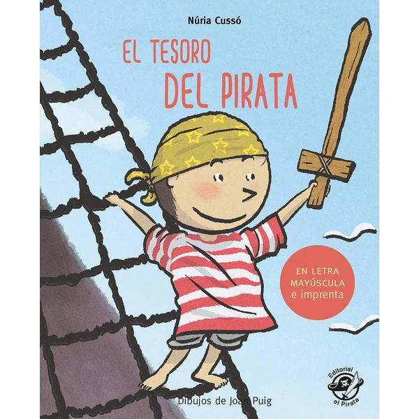

👶 5 años
El Tesoro del Pirata
Un cuento de aventuras piratas escrito en letra mayúscula y de imprenta, pensado para acompañar a los niños en sus primeros pasos con la lectura autónoma.
⭐
¿Por qué nos gusta?
- ✔Letra mayúscula, ideal para quien empieza a leer.
- ✔Historia de aventuras que engancha desde el principio.
- ✔Parte de una colección con varios títulos.
💬
Lo que más destacan las familias
Muchos padres coinciden en que la letra mayúscula facilita mucho que los niños se atrevan a leer solos, sin frustrarse a mitad de página. La historia de piratas también engancha desde el principio, así que piden seguir leyendo capítulo tras capítulo.